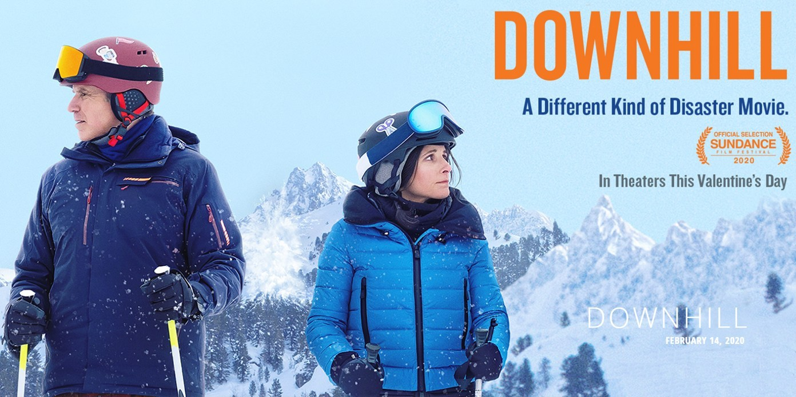

By Peter Kaminski

What’s your starting point going into Downhill? Did you get to see Will Ferrell and Julia Louis-Dreyfus do a bit as presenters at the Oscars and wonder, are those two in a movie together? Maybe you are a film-junkie and saw Force Majeure, the Swedish movie directed by Ruben Östlund that Downhill was based on. Or, if you’re like me, you stumbled upon an early review of the movie while browsing the internet during your lunch break—putting the Oscars appearance together to realize this was a movie happening in 2020. Whatever the circumstances, what you know, or what think you know, about Downhill before seeing it in theaters will shape your opinion.
Here's what I knew about Downhill before watching it:
Does this sound like a funny story to you?
Having not seen Seinfeld or Veep, I am ashamed to admit that this was my first time seeing Julia Louis-Dreyfus act. It’s also been a long time since I have seen a Will Ferrell movie, and, off the top of my head, I could not name any dramatic role that he’s been in. And that’s what makes this movie, and its casting, so interesting. By putting these two people on a movie poster together, you set the audience’s expectation for a comedy. As an audience, we think we know what to expect from Ferrell and Louis-Dreyfus, but the strangely dissonant part of Downhill is that most of their interactions together aren’t funny: they’re emotional and tense. Comedic relief is sprinkled throughout, largely provided by the supporting cast of characters: the hunk of a ski instructor; the much too personal and socially oblivious hotel manager (Miranda Otto); and the shroom taking, hash-tagging (#noagenda) millennial couple (Zach Woods and Zoe Chao). It is in these supporting characters, and some unnecessary plot tangents (see Chekov’s ski-helmet), that Downhill falls flat. Forced to carry the audience’s expectations of comedic relief, these characters are largely hyperbolic and mostly uninteresting.
The real enjoyment of Downhill comes from its two leading performers as they grapple with the damaged—nay altered—dynamic of their relationship. At one point Zoe Chao’s character, Rosie, is discussing the avalanche with Julia Louis-Dreyfus (Billie).
You have every right to be angry. If Zach had done that to me…I would have kicked him in the nuts, and he would have never seen me again. It’s black and white, she says, confidently.
How old are you? Billie asks.
Thirty, Rosie smiles, either unaware or unfazed by Billie’s unconvinced look.
For Billie (and for anyone that has a family), it is impossible to imagine a scenario that could ever be “black and white.” Would we be willing to turn our back on someone based on a reaction? As a viewer, it’s hard not to question what our own response would be if we were put into a life-threatening scenario while surrounded by the people we love. For me, these moments where Louis-Dreyfus and Ferrell navigate their relationship are the heart and soul of the movie. Any movie that lingers with us after we watch it, forcing us to grapple with our own nature, is worth considering.
Having never seen Force Majeure, I found Downhill to be an enjoyable enough movie that posed some interesting questions about human nature and our relationships with others. But after watching the trailer for Force Majeure, I might have only scratched the surface on what questions this story could leave me pondering.
When a song from a movie’s score pops up in my Spotify, it transports me back to the moment in time where I first discovered the movie. A good movie score can enhance emotions while watching the film, and amplify feelings and memories when listening to the soundtrack afterwards.
Downhill’s soundtrack was composed by Volker Bertelmann (The Art of Racing In The Rain, Hotel Mumbai)
Also worth a listen: It’s Black and White, a song by Volker Bertelmann on Spotify
#movies #movie-reviews #2020-movies